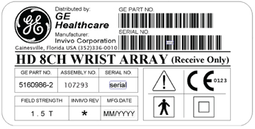

This document describes the 1.5T HD 8-Channel Wrist Array Coil, a Transmit/Receive coil made by Invivo, Catalog Number M3335LJ. Figure 1. 1.5T HD 8-Channel Wrist Array Coil Label

Product Identification and Shipping List
Figure 2. 1.5T HD 8-Channel Wrist Array Coil
Shipping List
Description
GE Part Number
Invivo Part Number
Quantity
1.5T HD 8-Channel Wrist Array Coil
5160986-2
107840
1
8-Channel Wrist Coil Wrist Pad
5160986-6
105918
1
8-Channel Wrist Coil Base Pad
5160986-7
105914
1
8-Channel Wrist Coil Finger Pad
5160986-8
105915
1
8-Channel Wrist Coil Palm Pad
5160986-9
105916
1
8-Channel Wrist Coil Upper Pad
5160986-10
105917
1
8-Channel Wrist Coil Elbow Pad
5160986-11
105919
1
Operator Manual
5160986-4
500197
1
* The part number’s Revision will be the last digit and
replace the * (asterisk).
Environmental Requirements
Storage Requirements
Store the coil in an air-conditioned Scan or Equipment Room in a storage space of 21.65 in. x 17.72 in. x 13.78 in. (55 cm x 45 cm x 35 cm). The coil should be transported and stored under the following conditions:
Ambient Temperature Range: +5°C to +65°C
Relative Humidity Range: 10% to 100%, non-condensing
Atmospheric Pressure Range: 500 hPa to 1060 hPa
Dimensions
18 in. W x 15 in. L x 11 in. H, 46 cm x 38 cm x 28 cm